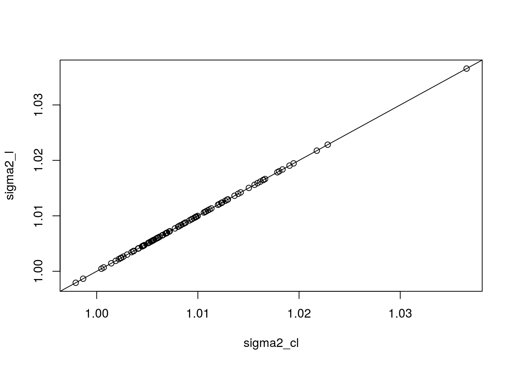
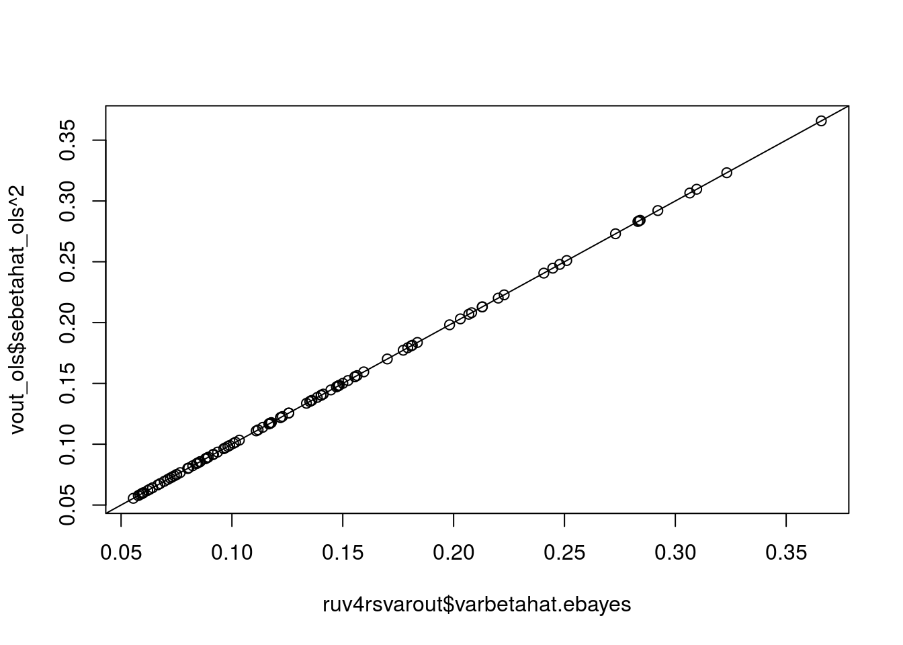
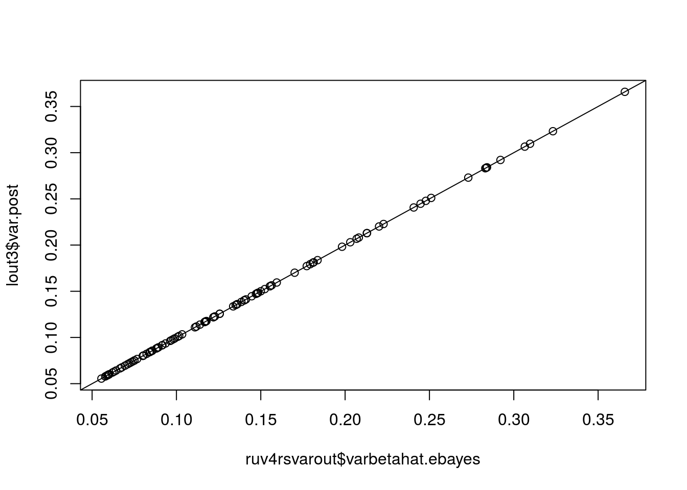

Check the scale equivariance of limma-shrinkage. See if I can reproduce the ruv package’s limmashrinkage.
Generate data.
n <- 101
sigma2 <- rchisq(n, df = 5) / 5
df <- sample(4:7, size = n, replace = TRUE)Show that it doesn’t matter if you squeeze sigma2 or sebetahat:
const <- 5
limout <- limma::squeezeVar(var = sigma2, df = df)
sigma2_l <- limout$var.post
limout_const <- limma::squeezeVar(var = sigma2 / const, df = df)
sigma2_cl <- limout_const$var.post * const
plot(sigma2_cl, sigma2_l)
abline(0, 1)
ruv::RUV4 using vicar package with limma-shrinkage.rm(list = ls())
set.seed(545)
n <- 11 ## number of samples
p <- 101 ## number of genes
q <- 3 ## number of confounders
k <- 2 ## number of observed covariates
m <- 23 ## number of controls
sd_vec <- sqrt(rchisq(p, df = 5) / 5)
is_zero <- rep(FALSE, length = p)
is_zero[1:71] <- TRUE ## about 70% of genes are null
ctl <- rep(FALSE, length = p)
ctl[1:m] <- TRUE
X <- matrix(rnorm(n * k), nrow = n)
B <- matrix(rnorm(k * p), ncol = p)
B[2, is_zero] <- 0
Z <- matrix(rnorm(n * q), nrow = n)
A <- matrix(rnorm(q * p), ncol = p)
E <- matrix(rnorm(n * p), nrow = n) %*% diag(sd_vec)
Y <- X %*% B + Z %*% A + EThree ways to calculate limma-shrunk variances in RUV4.
vout_ols <- vicar::vruv4(Y = Y, X = X, ctl = ctl, k = q, cov_of_interest = 2,
likelihood = "normal", limmashrink = TRUE, gls = FALSE,
include_intercept = FALSE)
ruv4out <- ruv::RUV4(Y = Y, X = X[, 2, drop = FALSE],
ctl = ctl, k = q, Z = X[, 1, drop = FALSE])
ruv4rsvarout <- ruv::variance_adjust(ruv4out)
v_simp <- vicar::vruv4(Y = Y, X = X, ctl = ctl, k = q, cov_of_interest = 2,
likelihood = "normal", limmashrink = FALSE, gls = FALSE,
include_intercept = FALSE)
lout3 <- limma::squeezeVar(v_simp$sebetahat_ols ^ 2, df = n - k - q)
plot(ruv4rsvarout$varbetahat.ebayes, vout_ols$sebetahat_ols ^ 2)
abline(0, 1)
plot(ruv4rsvarout$varbetahat.ebayes, lout3$var.post)
abline(0, 1)
sessionInfo()## R version 3.3.2 (2016-10-31)
## Platform: x86_64-pc-linux-gnu (64-bit)
## Running under: Ubuntu 16.04.2 LTS
##
## locale:
## [1] LC_CTYPE=en_US.UTF-8 LC_NUMERIC=C
## [3] LC_TIME=en_US.UTF-8 LC_COLLATE=en_US.UTF-8
## [5] LC_MONETARY=en_US.UTF-8 LC_MESSAGES=en_US.UTF-8
## [7] LC_PAPER=en_US.UTF-8 LC_NAME=C
## [9] LC_ADDRESS=C LC_TELEPHONE=C
## [11] LC_MEASUREMENT=en_US.UTF-8 LC_IDENTIFICATION=C
##
## attached base packages:
## [1] stats graphics grDevices utils datasets methods base
##
## loaded via a namespace (and not attached):
## [1] backports_1.0.5 assertthat_0.2.0 magrittr_1.5 limma_3.26.9
## [5] rprojroot_1.2 tools_3.3.2 htmltools_0.3.5 yaml_2.1.14
## [9] Rcpp_0.12.10 vicar_0.1.6 stringi_1.1.2 rmarkdown_1.3
## [13] knitr_1.15.1 stringr_1.2.0 digest_0.6.12 evaluate_0.10
## [17] ruv_0.9.6This site was created with R Markdown